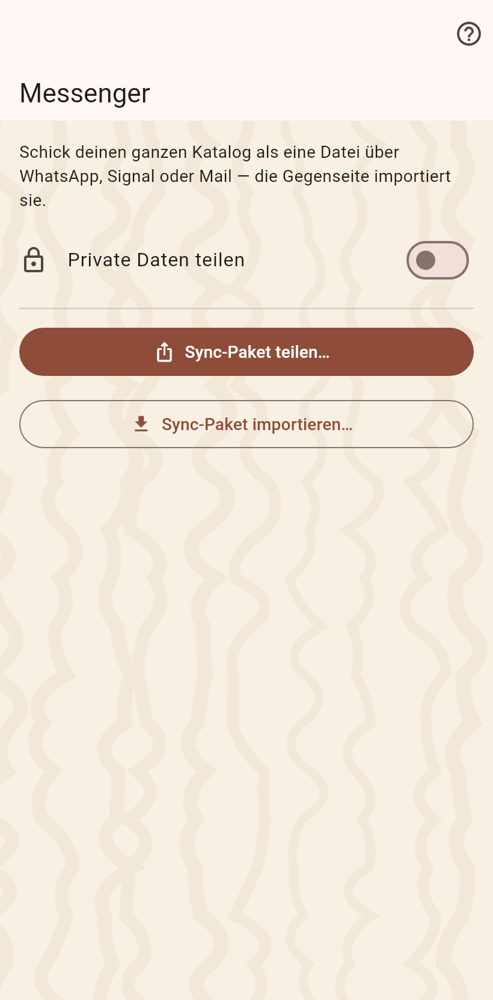

Abgleich als Datei: dieses Gerät schreibt ein Bündel mit allem, was es weiß, du schickst es über einen Messenger oder per Mail, und die andere Seite importiert es.

Das Bündel ist eine .catsync-Datei mit jedem Eintrag und jedem Foto; private Werte nur, wenn der Schalter es sagt. Das Teilen-Blatt bringt es zum Messenger.
Öffne die Datei aus dem Messenger: die App fragt, in welchen Katalog sie gehört, oder legt einen neuen an, hält einen Moment fest, importiert das Neue und öffnet die Ankunftsseite. Ein Bündel, das ein Partner zweimal schickt, ändert beim zweiten Mal nichts.